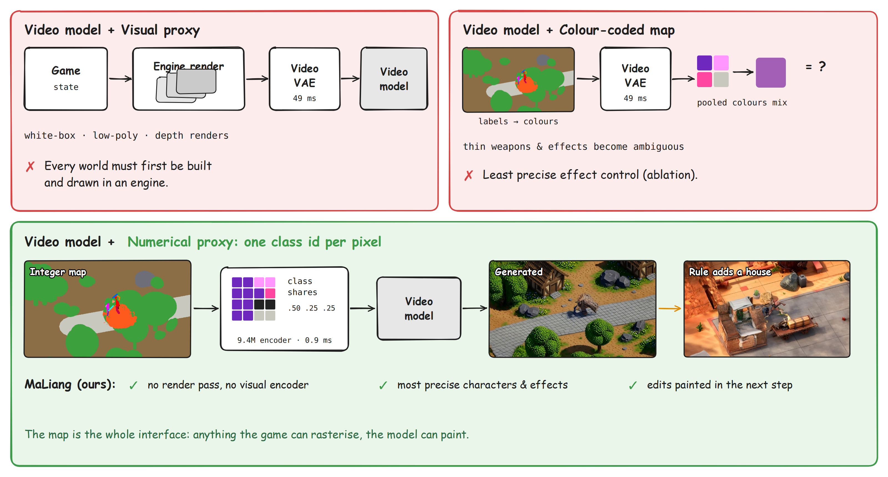
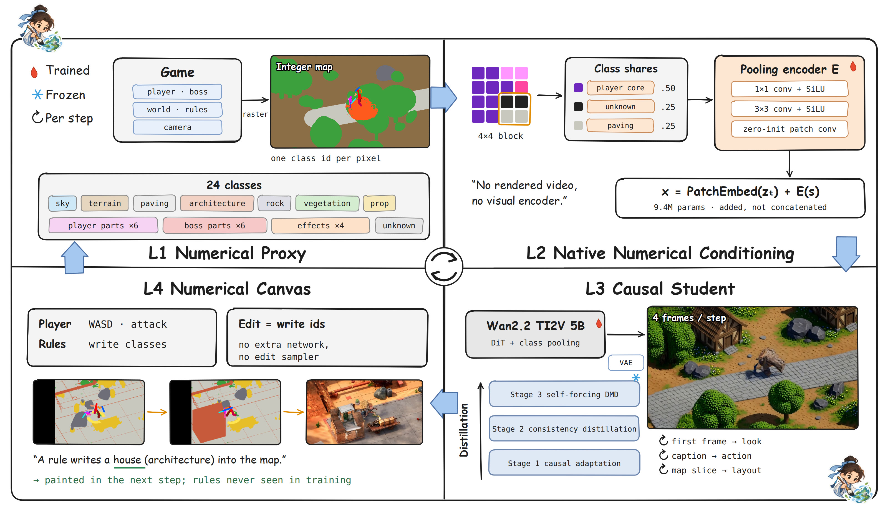
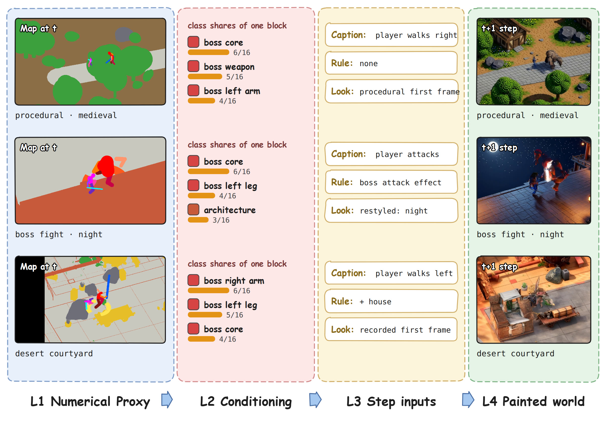
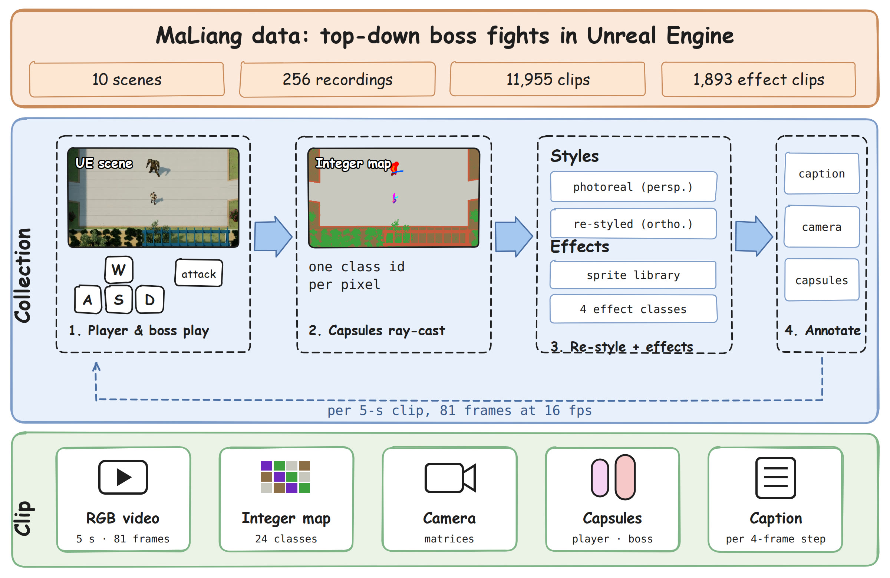

01 / Paper summary
Abstract
Video models now render game footage of remarkable quality, and recent systems use them as the renderer of an executable game: a simulator keeps the world state and rules, and the video model paints the frames. Most connect the two through a visual proxy—white-box, low-poly or colour-coded videos encoded by a video autoencoder—so every world must first be built and drawn in an engine. MaLiang removes this detour. Its numerical proxy is a per-pixel integer map of the whole world, including characters, body parts and attack effects; Native Numerical Conditioning adds it to a video diffusion transformer through a 9.4M-parameter class-pooling encoder, with no rendered video and no visual encoder; and the map becomes a Numerical Canvas that game rules edit and the model paints. With backbone and data fixed, integer conditioning matches colour-coded inputs in image quality and layout and controls characters and effects more precisely, even against a colour encoder of identical cost. Distilled into a causal student that streams in real time, MaLiang renders edits in the next step and paints unseen procedural worlds. On held-out recordings it reaches lower FVD (154 vs. 391) than the strongest off-the-shelf renderer, a 33B model, at statistically tied semantic accuracy.
154FVD on 100 held-out clips (33B SolarRenderer: 391)
29×faster than SolarRenderer; MaLiang streams in real time
9.4Mclass-pooling encoder, no visual encoder
next stepan edit to the map is painted in the next 0.25-s step
02 / System at a glance
Overview
A renderer should not need a render pass.
Prior game renderers feed the video model a proxy video that an engine must first draw, or a colour-coded map through a video VAE. MaLiang gives it the game's own numbers.

Map, generated frame and edit are real outputs.
Six worlds, painted from their maps.
Each card plays the map the model received (left) next to what it painted (right), in sync.
map → generatedprocedural map
map → generatedsame map · cyberpunk
map → generatedrule adds a house
map → generatedprocedural · village
map → generatednight
map → generatedrecorded map · cyberpunk
03 / Four-layer closed loop
Architecture
One map in. One 0.25-second step out. Repeat.
L1 the game rasterises its state into an integer map; L2 a pooling encoder turns it into class shares added to the patch embedding; L3 a causal student generates four frames per step; L4 game rules edit the map, which the next step paints.

L1
What the game writes
Numerical proxy
One 832×480 map of class ids per frame.
- 24 classes
- scene · body parts · effects
- same code for data and game
L2
How the model reads it
Native conditioning
Each 4×4 block becomes the share of each class.
- 9.4M params
- no visual encoder
- added to patch embedding
L3
How frames are made
Causal student
Wan2.2-TI2V-5B teacher distilled in three stages.
- 4 denoising steps
- KV cache: 3 sink + 17 recent
- streams in real time
L4
What play does
Numerical canvas
Rules and the player write classes into the map.
- no extra network
- painted next step
- rules unseen in training
04 / Across worlds
Examples
One step, end to end.
For three worlds: the map at time t (L1), the class shares of one block next to the character (L2), the step's inputs (L3), and the painted frames (L4).

All values are read from the real maps.
05 / Systems and interfaces
Results
Lower FVD than a 33B renderer, 29× faster.
One protocol for all methods: 100 five-second clips from ten recordings never seen in training, every output resampled to a common grid, and the same appearance, semantic and entity metrics.
Main comparison
MaLiang leads in quality and speed.
154 vs 391FVD ↓ vs. SolarRenderer (33B)
29× fasterMaLiang vs. the offline 33B renderer
62.3 vs 62.7mIoU, statistically tied (paired bootstrap)
| System | Backbone | What the video model sees | FVD ↓ | LPIPS ↓ | mIoU ↑ | Halluc. ↓ | Speed ↑ |
|---|---|---|---|---|---|---|---|
| AnyGameRenderer | H3 33B | primitive proxy video | 879 | 0.796 | 19.8 | 39.4 | 0.005× |
| CWM | H3 33B | depth + semantic maps | 708 | 0.705 | 28.3 | 25.7 | 0.003× |
| SolarRenderer | H3 33B | colour-coded structure video | 391 | 0.407 | 62.7 | 15.5 | 0.034× |
| MaLiang (ours) | Wan2.2 5B | integer map | 154 | 0.327 | 62.3 | 12.2 | 1× |
29× = 21.8 fps / 0.75 fps (Tab. 1 of the paper). Speed column: relative to MaLiang on the same hardware.
Interface ablation · same backbone, data and recipe
Integers control effects most precisely, at the cost of a light encoder.
| Condition | Effect response ↑ | Timing ↑ | Position IoU ↑ | Encoder cost ↓ |
|---|---|---|---|---|
| (1) colour video → video VAE | 51.5 | 87.1 | 0.559 | 55× |
| (2) colour video → light encoder | 57.5 | 90.8 | 0.563 | 1× |
| (3) integer map (ours) | 61.0 | 93.7 | 0.579 | 1× |
100 test clips (94 with boss attacks); position gains are significant in each of three seeds. A VACE branch (+2.4B) reading the colour map is also less precise (Appendix, Sec. C).
Same map, four worlds.
One recorded play session; the exact same map sequence, four first frames. Layout, characters and timing follow the map; materials and light follow the first frame.
MAP
winter
cartoon
cyberpunk
night
Qualitative results
Gallery
Cases on held-out clips. Hover or tap a clip to see the map it received.
06 / Data
Dataset
Ten Unreal Engine scenes, recorded with their integer maps.
A top-down action game with a player and a boss. Every clip is 5 s (81 frames) at 16 fps and 832×480, with RGB frames, the integer map, camera matrices and character capsules. Boss attack effects from a sprite library are composited onto photoreal clips and labelled with four effect classes.
11,955training clips · 5,205 photoreal + 6,750 re-styled
256recordings in 10 scenes
1,893clips with boss attack effects
100held-out test clips · 10 unseen recordings

07 / Walkthrough
Walkthrough
From a map of numbers to a painted, editable world.
A short captioned tour: the game writes a map of class ids, the same map is painted in different worlds, and game rules edit the map while the next step paints the change. Every shot shows the map the model received as an inset.
08 / Video
Video
One map. Endless worlds.
New cases recorded from the browser game; the inset shows the map the model received. With sound.